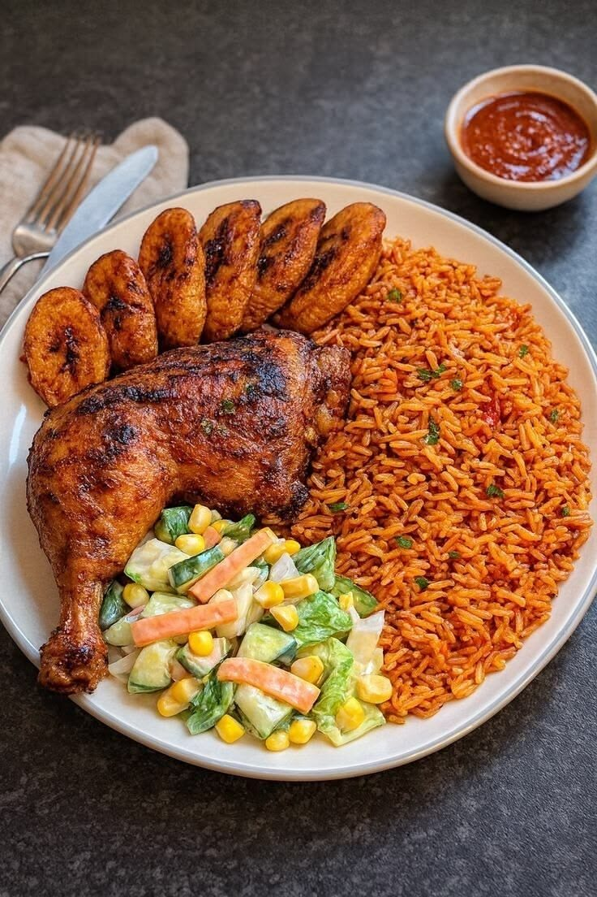

West Africa · Nigeria
Jollof Rice
A smoky, tomato-red one-pot rice that is the star of every West African party.
About this dish
Jollof is West Africa's celebration dish: long-grain rice steamed in a rich sauce of tomatoes, scotch bonnet peppers and onions. It is often traced back to the Senegambia region, and today Nigeria, Ghana, Senegal and others lovingly argue over who makes it best. The prized "party jollof" gets its smoky flavour from the bottom of the pot.
Ingredients
Servings:
- 2 cups long-grain parboiled rice
- 4 large ripe tomatoes
- 2 red bell peppers
- 1 scotch bonnet pepper (or to taste)
- 2 medium onions
- 3 tbsp tomato paste
- 0.25 cup vegetable oil
- 2 cups chicken or vegetable stock
- 1 tsp dried thyme
- 1 tsp curry powder
- 2 bay leaves
- Salt to taste
Cooking instructions
Step-by-step method
- Blend the tomatoes, bell peppers, scotch bonnet and one onion into a smooth purée.
- Heat the oil in a heavy pot. Fry the second onion (sliced) for 3 minutes, then stir in the tomato paste and fry for 5 minutes until it darkens.
- Pour in the purée, add thyme, curry powder, bay leaves and salt. Simmer uncovered for 20-25 minutes until thick and the oil rises to the top.
- Rinse the rice until the water runs mostly clear. Stir it into the sauce with the hot stock, so the liquid just covers the rice.
- Cover the pot with foil and a tight lid. Cook on the lowest heat for 30 minutes, without stirring, so the rice steams.
- Fluff with a fork, let the bottom crisp for a few minutes for the classic smoky taste, and serve with fried plantain.
Chef's tips
Taste and adjust the seasoning at the end. Use the servings buttons above to scale the ingredients, and keep the heat low whenever a recipe says to simmer.
Watch a tutorial
Video not loading? Watch on YouTube.
Nutrition facts
| Nutrient | Amount |
|---|---|
| Calories | 480 kcal |
| Protein | 9 g |
| Carbohydrates | 80 g |
| Fat | 14 g |
| Fibre | 4 g |
Where it comes from: Nigeria
More recipes to try
- Injera (Ethiopia)
- Chicken Tagine (Morocco)
- Bunny Chow (South Africa)
- Isombe (Rwanda)